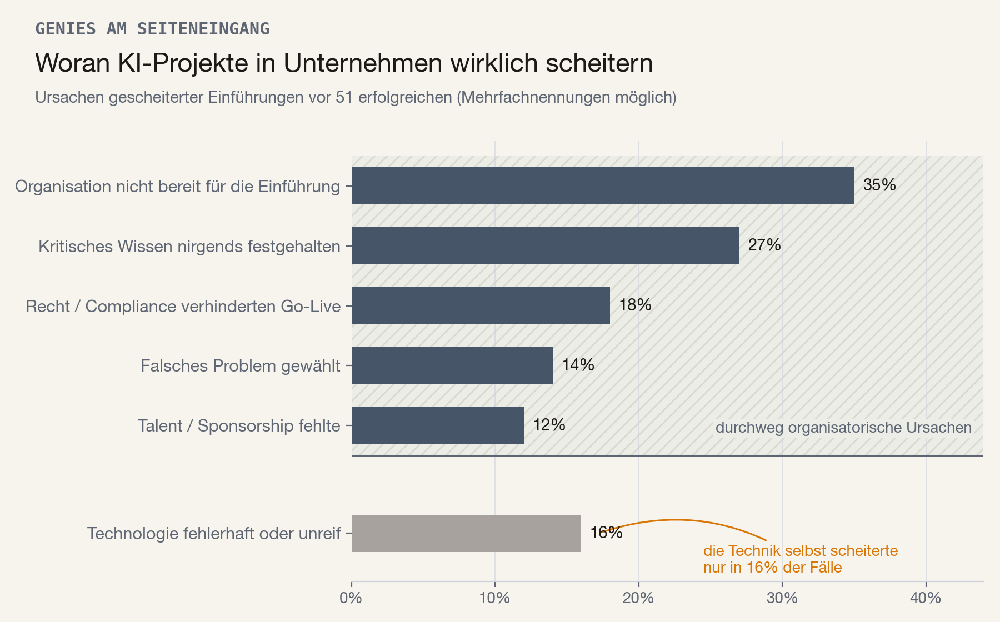
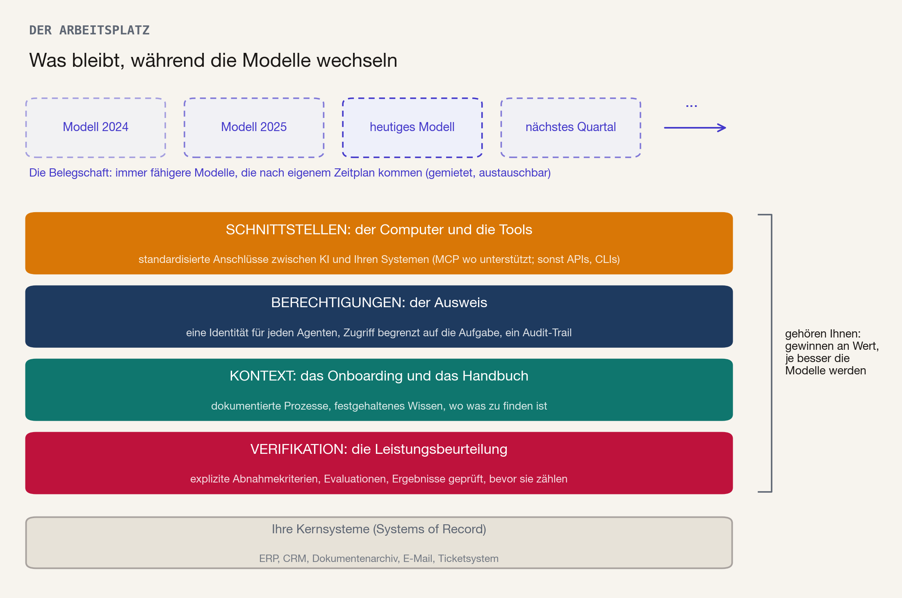
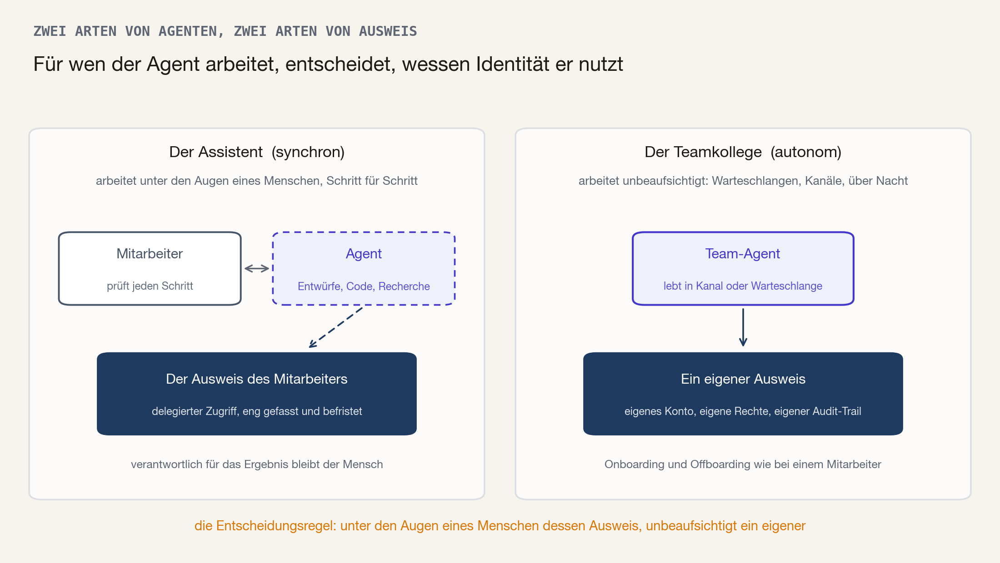
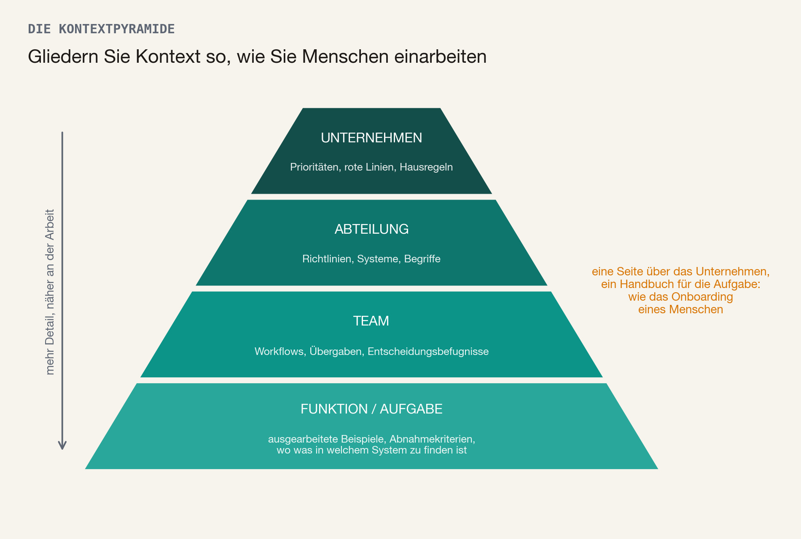

Stellen Sie sich vor, dass alle paar Monate ein bemerkenswerter neuer Mitarbeiter in Ihrem Unternehmen anfängt: in vielen Bereichen leistungsfähiger als alle aktuellen Mitarbeiter, zu einem Bruchteil der Kosten und mit Fähigkeiten, die niemand sonst hat. Sie haben ihn nicht eingestellt. Niemand hat eine Stellenbeschreibung verfasst, kein Headhunter eine Shortlist geschickt. Trotzdem ist er sofort startbereit - und in der Lobby wartet schon ein noch besserer.
Das ist die beste Analogie, die mir eingefallen ist, um zu beschreiben, welchen Effekt KI-Agenten auf Unternehmen haben werden. Den Fortschritt können Sie nur begrenzt planen: Sie entscheiden nicht, wann diese neuen Mitarbeiter kommen, worin sie gut sein werden und was sie kosten. Sie können aber den Arbeitsplatz vorbereiten, den sie vorfinden: Den Computer und die Tools, mit denen sie arbeiten. Das Berechtigungsprofil, das festlegt, worauf sie zugreifen dürfen. Das Onboarding und die Prozess-Handbücher, die ihnen beibringen, wie Ihr Geschäft tatsächlich funktioniert. Und das Performance-Review, das entscheidet, welchen Teilen ihrer Arbeit Sie vertrauen.
Ich schreibe diesen Artikel, weil sich dasselbe Gespräch ständig wiederholt. Im vergangenen Jahr sind in Gesprächen mit CEOs und CTOs etablierter Unternehmen immer wieder dieselben Bausteine aufgetaucht, meist nach dem zweiten gescheiterten Pilotprojekt oder vielen verwirrenden Pitches von Techkonzernen und Startups, die Ihnen alle das beste "Multi-Agent-Multi-Model-Super-Duper-KI-System" verkaufen wollen.
Zwei Dinge vorweg. Erstens verkaufe ich hier nichts: ellamind ist ein Tech-Startup, keine Beratung, und dieser Text beschreibt schlicht, wie ich aus CEO/CTO-Sicht in einem etablierten Unternehmen selbst in KI bzw. die KI-Transformation investieren würde. Zweitens bin ich trotzdem nicht neutral: Unternehmen, die diese Bausteine umgesetzt haben, sind genau die Unternehmen, mit denen ein Startup wie unseres am liebsten arbeitet, weil sie die "KI-Geschwindigkeit" mitgehen können und die Wahrscheinlichkeit von unerwarteten Blockern oder geringem RoI deutlich geringer ist.
KI verhält sich nicht so wie andere Technologien, mit denen Ihre IT-Organisation viel Erfahrung hat. Bei der Auswahl eines ERP-Systems haben Sie die Wahl zwischen einer Handvoll ausgereifter Produkte: Im Rahmen eines strukturierten Beschaffungsprozesses können diese verglichen werden, bevor Sie in Verhandlungen einsteigen und einen Enterprise-Contract mit einer jahrelangen Laufzeit abschließen. Daher folgen auch die Fragen zu KI in Management-Briefings und Entscheidungsgremien oft noch immer diesem Muster: "Tool X von Anbieter A oder Tool Y von Anbieter B?", "Modell A oder Modell B?". Sinnvolle Fragen, aber abgeleitet aus einer Welt, die es so nicht mehr gibt: Das beste KI-Modell (laut LM Arena, einer der meistbeachteten Ranglisten der Branche) hat sich in nur drei Jahren rund zwanzigmal geändert.[1] Das Team hinter der besten öffentlichen KI-Fortschritts-Prognose ist sich intern um Jahre uneins, wann Systeme in welchem Bereich menschliche Experten einholen.[2] (Über dieses Tempo und die Frage, wohin es führt, habe ich in meinem früheren Essay A Country Full of Geniuses geschrieben.) Und im Juni wurde der Zugang zu KI-Modellen selbst kurzzeitig zur politischen Frage: Das Handelsministerium in Washington zwang Anthropic, den Zugang zu deren neuestem Frontier-Modell Claude Fable abzuschalten.[3] Neue Modelle, neue Tools und damit neue Entscheidungsgrundlagen halten sich nicht an Ihren Beschaffungs-, Budget- oder Planungszyklus, sondern kommen rasant und chaotisch. Sie wissen nicht, welches Modell, welche Agenten und welche Tools Ihr Unternehmen in zwei Jahren einsetzen wird. Und wer etwas anderes behauptet, ist entweder ahnungslos oder lügt, um Ihnen etwas zu verkaufen.
Die Belegschaft können Sie also nicht planen. Aber Sie können den Arbeitsplatz vorbereiten.
Der Rest dieses Textes beschreibt diesen Arbeitsplatz im Detail: was die vier Ebenen sind, was jede einzelne konkret von Ihnen verlangt und was ich mit dem nächsten Budgetzyklus tun würde. Vorher aber ein kurzer Blick darauf, warum das jetzt Ihre Aufmerksamkeit verdient. Denn die Belege dafür, was KI-Erfolg von KI-Misserfolg trennt, sind ungewöhnlich eindeutig.
Genies am Seiteneingang
Fast jedes Großunternehmen setzt inzwischen irgendwo KI ein; kaum eines kann den RoI belegen. Umfrage um Umfrage bestätigt dasselbe Muster, auch wenn die genauen Details variieren.[4] Warum diese große Diskrepanz zwischen Aufwand und Ertrag? Die beste Evidenz dazu liefert eine Stanford-Studie vom April 2026, die 51 erfolgreiche KI-Einführungen in Unternehmen untersucht hat, und vor allem die gescheiterten Versuche davor:[5]

Ursachen der gescheiterten KI-Einführungen (Mehrfachnennungen je Fall möglich). Quelle: Stanford Digital Economy Lab, April 2026.
Nur in 16 Prozent der Fälle wurden Fehlschläge durch die Technologie selbst verursacht. Alle Ursachen mit größeren Balken sind organisatorisch: Die Organisation war nicht bereit für die Einführung (35 Prozent), das Wissen, das die KI benötigt hätte, war nirgends festgehalten (27 Prozent), oder rechtliche und Compliance-Bedenken verhinderten den Go-Live (18 Prozent). Projekte scheitern nicht daran, dass die Modelle zu schlecht oder zu dumm sind. Sie scheitern daran, dass die Modelle in ein Unternehmen kommen, das nicht bereit war. Die Autoren der Studie verdichten 116 Seiten auf einen Satz: "Die Technologie funktioniert. Die Herausforderung ist alles andere."
Ihre Mitarbeiter warten unterdessen nicht mehr. Die Hälfte aller Wissensarbeiter nutzt bereits KI-Tools, die ihr Arbeitgeber nie freigegeben hat, und rund ein Drittel der ChatGPT-Nutzung am Arbeitsplatz läuft über private Accounts, unsichtbar für die IT-Abteilung.[6] Die neuen Mitarbeiter sind längst im Haus; teilweise sind sie durch den Seiteneingang reingelassen worden, ohne Ausweis und ohne Aufsicht.
Arbeitsplatz, Berechtigungen, Handbuch und Beurteilung
Neben den vier Ebenen, zu denen wir gleich im Detail kommen, eine Unterscheidung, von der alles Weitere abhängt: Die meisten Unternehmen kennen KI bisher in erster Linie aus dem Chat-Fenster: Ein Mensch tippt, die KI antwortet, der Mensch kopiert den brauchbaren Teil zurück in ein anderes System. Das war die erste Ausbaustufe, und sie ist ein guter Weg für Sie und Ihre Mitarbeiter, sich mit der Technologie vertraut zu machen. Echter, messbarer Mehrwert entsteht aber meist erst mit der zweiten: mit Agenten, also KI-Systemen, die selbst Tools bedienen und langfristige Arbeit über Systemgrenzen hinweg erledigen können. Sie lesen z.B. ein Ticket, fragen Daten aus einem ERP-System ab und entwerfen die Antwort und verschicken sie an den Kunden. McKinsey formuliert den ökonomischen Unterschied unmissverständlich: Die erste Welle von Chat-Assistenten machte Einzelne "geringfügig schneller", ohne die Leistung des Unternehmens zu verändern. Im Agentenzeitalter konzentrieren sich die Erträge dort, wo Arbeit um Agenten herum neu gestaltet wird.[7] Die Softwareentwicklung, die Disziplin, in der diese Entwicklung am weitesten fortgeschritten ist, verdeutlicht die Folgen: Binnen eines Jahres sind Agenten von hilfreichen "Auto-Complete"-Tools zu Autoren eines signifikanten Teils alles weltweit geschriebenen Codes geworden. Der Arbeitsalltag von Programmierern besteht heute vor allem darin, Agenten anzuleiten und ihre Ergebnisse zu prüfen.[8] Ein Junior-Entwickler kann heute an einem Nachmittag Projekte und Features umsetzen, für die vor einem Jahr ein Team aus 4 erfahrenen Programmierern noch eine Woche benötigt hätte.
Damit Ihre Organisation Agenten "richtig" nutzen kann, muss deren Arbeitsplatz aus mindestens vier Ebenen bestehen. Keine davon ist ein Modell:

Die Modelle wechseln im Quartalstakt. Die vier Ebenen darunter gehören Ihnen, und sie gewinnen an Wert, je besser die Modelle werden.
Der Computer und die Tools: Schnittstellen
Ein Mitarbeiter ist nur dann produktiv, wenn er Zugriff auf die relevanten Systeme hat: das ERP-System, das Dokumentenarchiv oder das Ticketsystem. Für Agenten gilt dasselbe, und die praktische Empfehlung ist hier erfreulich einfach geworden. Wo Ihre Software das Model Context Protocol (MCP) unterstützt, ist es die naheliegende Wahl: MCP hat sich als offener Branchenstandard für die Verbindung von KI-Systemen und Anwendungen etabliert und wird von OpenAI, Google, Microsoft und Amazon gleichermaßen getragen.[9] Wo es nicht unterstützt wird, nehmen Sie das, was da ist: Gewöhnliche APIs und Zugriff über ein CLI funktionieren für Agenten heute problemlos. Und für die Legacy-Anwendung ganz ohne Schnittstelle, die es in jedem Unternehmen gibt, werden Computer-Use-Agenten zu einer brauchbaren Brücke: KI-Systeme, die dieselben UIs nutzen wie Ihre Mitarbeiter. Die Regel lautet Pragmatismus: Überall dort, wo ein Mitarbeiter Zugriff hat, kann zunehmend auch ein Agent arbeiten. Geben Sie ihm die am stärksten standardisierte Schnittstelle, die verfügbar ist, und warten Sie nicht auf die perfekte Lösung.
Eine Warnung kommt von den Erstellern der Modelle und Agenten selbst: Die Entwickler von Anthropic beschreiben, wie sie aufwendige Workarounds, die sie für eine Modellgeneration gebaut hatten, wieder löschen mussten, weil die nächste Generation sie zu "dead weight" machte.[10] Prompts, Tools oder Skills, die die Schwächen des heutigen Modells ausgleichen, verlieren binnen Monaten an Wert. Die Schnittstellen, über die ein beliebiges Modell an Ihre Systeme kommt, behalten ihren Wert hingegen. Die Stanford-Forscher kommen von außen zum selben Schluss: Die leistungsstärksten Implementierungen "behandeln Modelle als austauschbare Komponenten innerhalb von Plattformen, die sie selbst kontrollieren".[5] Bauen Sie die Anschlüsse, nicht die Workarounds.
Der Ausweis: Berechtigungen
Niemand drückt einem neuen Mitarbeiter am ersten Tag den Generalschlüssel in die Hand. Bei KI machen viele Unternehmen aber ziemlich genau das. Im durchschnittlichen Unternehmen kommen auf eine menschliche Identität bereits mehr als 80 Maschinenidentitäten, 42 Prozent davon mit privilegiertem Zugriff - und gleichzeitig verstehen 88 Prozent der Organisationen unter einem "privilegierten Nutzer" nach wie vor ausschließlich einen Menschen.[11] Das Risiko ist nicht hypothetisch. Sicherheitsforscher nennen das Grundmuster die "lethal trifecta", die tödliche Dreierkombination: Eine KI, die Zugriff auf vertrauliche Daten hat, Inhalte von Dritten verarbeitet und über einen Kanal nach draußen verfügt, wird früher oder später zum Sicherheitsrisiko. Ein jüngst veröffentlichter Proof of Concept zeigte einen Assistenten mit Datenbankrechten, der brav Zugangstokens preisgab, weil jemand entsprechende Anweisungen in ein ganz normales Support-Ticket geschrieben hatte.[12] Im Juli beschrieb Hugging Face den mehrstufigen Einbruch eines KI-Agenten in deren stark gesicherte Produktions-Systeme in rasanter Geschwindigkeit; allein um die mehr als 17.000 Aktionen des Angreifers forensisch nachzuvollziehen, war wiederum KI nötig.[13] Im Cybersecurity-Bereich laufen inzwischen sowohl Angriff als auch Verteidigung über KI-Agenten.
Die Lösung ist dasselbe Berechtigungsmanagement, das Sie für menschliche Mitarbeiter längst nutzen. Am Anfang steht eine grundlegende Entscheidung, die die meisten Organisationen nach meiner Erfahrung noch nicht bewusst getroffen haben: Welche Agenten arbeiten unter der Identität eines Mitarbeiters, und welche brauchen eine eigene?

Ein Assistent, der unter den Augen eines Menschen arbeitet, leiht sich dessen Identität. Ein Teamkollege, der unbeaufsichtigt arbeitet, braucht eine eigene.
Ein Assistent, der synchron und unter Aufsicht eines Mitarbeiters arbeitet, kann unter der Identität und mit den Berechtigungen dieses Mitarbeiters handeln: mit delegiertem, zeitlich befristetem Zugriff. Verantwortlich für das Ergebnis bleibt der Mensch, genau wie bei der Arbeit mit jedem anderen Tool. Ein Agent, der asynchron und unbeaufsichtigt arbeitet, der z.B. die Vorarbeit für ein ganzes Team leistet oder über Nacht eine Warteschlange abarbeitet, ist dagegen etwas anderes: Er braucht ein eigenes Konto, eigene, eng gefasste Berechtigungen und einen eigenen Audit-Trail, genau wie ein menschlicher Mitarbeiter. Die Anbieter von Identitätslösungen ziehen inzwischen dieselbe Grenze: Microsofts Verzeichnisdienst Entra unterscheidet zwischen Agenten, die mit dem Token eines Nutzers handeln, und autonomen Agenten mit eigener Identität. Und die Forscher von Okta bringen ein Problem auf den Punkt: Erbt ein Agent den Login eines Menschen, verlieren Sie Teile des Audit-Trails, was Kontrolle und auch Erfolgsmessung auf Unternehmensebene schwieriger machen kann.[14]
Diese Unterscheidung ist keine Theorie mehr. Claude Tag von Anthropic, im Juni veröffentlicht, ist ein KI-Teamkollege, der im Slack-Chat lebt: ein gemeinsamer Agent mit Gedächtnis, mit dem das ganze Team spricht und der zwischen den Anfragen aus eigener Initiative Arbeit übernimmt.[15] Solche Produkte sollten nie über den geliehenen API-Key irgendeines Mitarbeiters laufen, sondern von Anfang an eine eigene Identität bekommen. Ihre IT-Abteilung muss darauf vorbereitet sein, Agenten genau wie Mitarbeiter zu onboarden - inkl. eigener E-Mail-Adresse, eigenen Laufwerken und Zugriff auf die jeweils benötigten Kernsysteme.
Das Onboarding und das Handbuch: Kontext
Die dritte Ebene entscheidet darüber, ob Sie die Arbeit Ihres Neuzugangs tatsächlich gewinnbringend nutzen können. Ein brillanter Generalist ohne Kontext, der Ihre Preislogik, Ihre Eskalationsregeln und Ihre Definition einer guten Antwort nie gesehen hat, produziert brillanten, aber nutzlosen Output. Die ermutigende Nachricht aus der oben zitierten Stanford-Studie: Der Kontext muss nicht unbedingt aufwendig vorbereitet werden. Fast niemand hatte aufgeräumte Daten (6 Prozent); 91 Prozent der erfolgreichen KI-Rollouts nutzten unaufbereitete, unstrukturierte Dokumente. Zugang schlägt Ordnung.[5] Die schlechte Nachricht: In 27 Prozent der gescheiterten KI-Rollouts war der Kontext, den die KI gebraucht hätte, nie irgendwo aufgeschrieben worden, sondern existierte als implizites Wissen nur in den Köpfen der Mitarbeiter. Das Handbuch existierte schlicht nicht - weder für den Agenten noch für sonst jemanden.
Also: Schreiben Sie Ihr implizites Prozesswissen auf. Und zwar so, wie Sie auch einen Menschen einarbeiten würden, wenn er den Job nur mit Hilfe der Onboarding-Dokumente erledigen müsste (aber dafür unendlich viel Zeit und Geduld hätte, sich "Wissenschnipsel" aus verschiedensten Quellen zusammenzusuchen).

Kontext ist so gegliedert wie das Onboarding: ein wenig über das Unternehmen, ein Handbuch für die Aufgabe.
Ein neuer Mitarbeiter bekommt eine Seite über das Unternehmen und einen dicken Ordner über seinen Job. Gliedern Sie Ihren Kontext genauso, von oben nach unten: auf Unternehmensebene eine kurze, gepflegte Übersicht über Prioritäten, rote Linien und Hausregeln, die jeder Agent einhalten muss; darunter je Abteilung die geltenden Richtlinien, Systeme und Begriffe; darunter je Team die Workflows, Übergaben und Entscheidungsbefugnisse; und ganz unten, je Funktion oder Aufgabe, das vollständige Arbeitswissen, inklusive ausgearbeiteter Beispiele und einer Beschreibung dessen, was ein gutes Ergebnis ausmacht. Eine Dimension der Pyramide wird dabei gern vergessen: Kontext betrifft nicht nur Ziele und Ergebnisse, sondern auch Schnittstellen und Datenquellen. Ein Agent muss wissen, dass Vertragsnachträge im DMS liegen und nicht in E-Mail-Anhängen, welches der drei Felder namens "Kundennummer" das maßgebliche ist und an wen er eskalieren soll. Zu dokumentieren, wo etwas liegt, ist genauso wertvoll wie zu dokumentieren, wie etwas gemacht wird.
Für die Pflege all dieses Wissens gibt es inzwischen einen naheliegenden Mechanismus: Skills. Ende 2025 von Anthropic eingeführt und im Prinzip schnell von der ganzen Branche kopiert, sind Skills schlicht Ordner mit Anweisungen im Klartext, die ein Agent lädt, wenn eine Aufgabe sie erfordert.[16] Das Format klingt banal, interessant sind die Folgen für die Governance: Weil Skills gewöhnliche Textdateien sind, können Fachexperten sie ohne Programmierkenntnisse schreiben, Administratoren sie zentral verwalten und Revisoren jedes Wort nachlesen, das der Agent zu sehen bekommt. Und wer eine Vorgehensweise für alle Agenten im Unternehmen aktualisieren will, bearbeitet ein einziges Dokument. Das Wissen Ihrer Schadenabteilung, wie eine strittige Rechnung zu behandeln ist, wird so zu einem Asset mit Versionshistorie.
Der strategische Kern, der in jede Vorstandsvorlage gehört: Kontext ist die Ebene, in der der eigentliche Wert Ihres Unternehmens liegt. Modelle und Applikationen sind keine Alleinstellungsmerkmale. Aber niemand sonst hat Ihre Prozesse, Ihre Definitionen, Ihr über Jahre gewachsenes Verständnis davon, was ein gutes Ergebnis in Ihrem Kerngeschäft ausmacht. In der Stanford-Studie nannten drei Viertel der erfolgreichen Anwender die eigenen Daten einen strategischen Schlüsselfaktor.[5] Satya Nadella hat in einem Beitrag vom Juli die unangenehme Kehrseite beschrieben: Um KI nützlich zu machen, "bezahlen Sie im Grunde zweimal für Intelligenz, einmal mit Geld und ein zweites Mal mit etwas noch Wertvollerem: mit dem proprietären Wissen, das Sie preisgeben müssen, damit diese Intelligenz nützlich wird".[17] Genau deshalb muss dieses Wissen in Formaten und Systemen bleiben, die Ihnen gehören. Wenn Ihre Organisation nur eine dieser vier Ebenen ernsthaft intern aufbauen kann, dann diese: Eine gut gepflegte Kontextebene lässt sich auf jedes Modell und jeden Agenten übertragen, den Sie je einsetzen werden, und sie macht jeden brillanten Neuzugang vom ersten Tag an in Ihrem Geschäft produktiv.
Die Leistungsbeurteilung: Verifikation
Die Arbeit eines neuen Mitarbeiters wird in der Regel geprüft, bevor man sich auf sie verlässt. Oft schaut ein erfahrener Kollege einmal über die Daten, bevor sie ins ERP-System eingegeben werden. Niemand lässt den Neuzugang vom ersten Tag an eigenständig Überweisungen freigeben; Vertrauen wächst mit jedem Ergebnis, das ohne Beanstandung durchläuft. Dasselbe Prinzip erklärt die vierte Ebene des Arbeitsplatzes und ist bei Agenten noch entscheidender als bei menschlichen Mitarbeitern: Wenn ein Entwurf praktisch nichts mehr kostet und sofort vorliegt, wird die Verifikation zur entscheidenden und knappen Ressource in Ihrer Organisation - die Fähigkeit, maschinellen Output zu prüfen und die Verantwortung dafür zu übernehmen. Das Arbeitspapier "Some Simple Economics of AGI" des MIT-Ökonomen Christian Catalini macht genau das zur zentralen These: Der begrenzende Faktor für Wachstum verschiebt sich von der Intelligenz zur "human verification bandwidth", der menschlichen Prüfkapazität. Verifikation wird damit von einer Compliance-Funktion zu einer Produktionsfunktion.[18] Im Klartext: Wer den Ergebnissen seiner Agenten schneller vertrauen kann, kann mehr Agenten einsetzen. In Bottlenecks habe ich diese Dynamik im Detail beschrieben.
Wie sieht die Investition in Verifikation praktisch aus? Drei Bausteine, aufsteigend nach Komplexität: Erstens explizite Abnahmekriterien. Eine schriftliche Definition je Workflow, was ein korrektes Ergebnis ausmacht - so formuliert, dass ein Prüfer sie anwenden kann, ohne jemanden fragen zu müssen. Die meisten Organisationen stellen dabei fest, dass sie eine solche Definition nie hatten, nicht einmal für Menschen. Zweitens Evaluation und "Golden Answers": kuratierte Sammlungen echter Fälle mit guten, kontrollierten Antworten, an denen jedes neue Modell, jeder neue Agent und jede Prompt-Änderung gemessen werden kann, bevor sie in Produktion gehen. Diese Evaluationen sind Ihr Qualitätsmaßstab in ausführbarer Form. Sie gehören Ihnen - genau wie Ihre Buchhaltung. Überlassen Sie es keinem externen Anbieter, für Sie zu definieren, was "gut" bedeutet. Dieses Thema kann auch nicht an Ihre IT-Abteilung delegiert werden - oft können nur die Fachexperten die Output-Qualität verlässlich einschätzen.[17] Drittens Prüfung nach dem Ausnahmeprinzip: Setzen Sie Ihre erfahrenen Mitarbeiter als Prüfer für besonders schwierige oder unsichere Fälle ein, nicht als Freigabeinstanz für alles. In den Stanford-Daten erreichten Einführungen, bei denen die KI den Routineanteil übernimmt und bei Unsicherheit eskaliert, einen medianen Produktivitätsgewinn von 71 Prozent - gegenüber 30 Prozent dort, wo jedes Ergebnis geprüft wird.[19] Die Formel der Ökonomen für den Zielzustand trifft den Anspruch genau: "rent the cognition, own the trust" - die Intelligenz mieten, das Vertrauen besitzen.[18]
Aus unserer eigenen Evaluationsarbeit bei ellamind kenne ich keine schärfere Trennlinie zwischen Unternehmen, die KI-Nutzung skalieren, und solchen, die ewig im Pilotprojekt festhängen: Teams, die einheitlich definieren und quantifizieren können, was ein gutes Ergebnis ist, schaffen es häufig, die Fähigkeiten der Technologie schnell & produktiv zu nutzen. Teams, die das nicht können, kommen oft nie über die Demo hinaus.
Was das nächste Budget finanzieren sollte
Bevor wir zur Liste kommen, eine Grundvoraussetzung: breiter, offiziell freigegebener Zugang zu einem Frontier-Modell - und zwar am besten gestern. Ihre Mitarbeiter nutzen KI ohnehin, und die heutigen Modelle können längst weit mehr, als die meisten Organisationen bisher für sich erschlossen haben; Ethan Mollick argumentiert, die Veränderung der Arbeitswelt in den nächsten fünf Jahren stehe selbst dann fest, wenn der KI-Fortschritt heute zum Stillstand käme (ich stimme ihm komplett zu).[20] Seien Sie sich aber im Klaren darüber, was breiter KI-Zugang tatsächlich bringt: Erfahrung und Kompetenz - die Fähigkeit Ihrer Belegschaft, ein eigenes Urteil über diese Systeme zu entwickeln. Die Rendite kommt erst, wenn diese Kompetenz auf Agenten in neu gestalteten Workflows trifft, wie es die Softwareentwickler als Erste erlebt haben. Der Zugang ist das Eintrittsgeld, nicht die Transformation.
Unsere Erfahrung zeigt, an welchen Stellen das Geld am besten investiert ist:
Gestalten Sie einige wenige Workflows end-to-end um Agenten herum neu, statt überall Copilots zu verteilen. Unternehmen mit überdurchschnittlichem KI-RoI haben dreimal häufiger Workflows grundlegend neu gestaltet, statt Assistenten auf die alten Abläufe zu setzen. Legen Sie die Rolle des Menschen dabei wenn möglich von Anfang an als Prüfung nach dem Ausnahmeprinzip an.[19]
Geben Sie Agenten noch dieses Jahr einen eigenen Ausweis. Entscheiden Sie für jede Einführung die Frage "Assistent oder Teamkollege" explizit und vorab, und erweitern Sie Ihr Berechtigungssystem um Agentenidentitäten.
Finanzieren Sie das Handbuch. Bezahlen Sie Prozessdokumentation, die Kontextpyramide und Skills, die Ihre eigenen Fachexperten schreiben - und zwar bevor Sie irgendetwas skalieren. Das ist unglamouröses Budget mit Zinseszinseffekt: die eine Investition, die jedes künftige Modell und jede KI-Applikation vom ersten Tag an besser in Ihrem Geschäft macht.[5]
Bauen Sie Verifikation als eigene Funktion auf. Abnahmekriterien je Workflow, Evaluationssets, die vor jeder Änderung laufen, erfahrene Mitarbeiter in der neuen Rolle als Prüfer von eskalierten Fällen. Finanzieren Sie den Aufbau der Verifikationsinfrastruktur wie eine Produktionsfunktion, denn genau das ist Verifikation inzwischen bzw. wird es bald sein.[18]
Committen Sie sich auf einen (Modell-)Anbieter - aber halten Sie sich den Wechsel offen. Der alte Rat, überall modellagnostisch zu bleiben, ist schlecht gealtert: Modelle und das Tooling um sie herum (der "Harness", in dem der Agent läuft) werden zunehmend als ein gemeinsames Produkt entworfen, und eine Auswahl aus zehn Modellen hilft keinem Mitarbeiter. Sich auf den integrierten Stack eines Anbieters festzulegen, ist deshalb oft die richtige Entscheidung und alle Frontier-Anbieter haben Modelle für unterschiedliche Aufgaben- und Preiskategorien im Angebot. Was Sie sich erhalten müssen, ist die Möglichkeit zum Ausstieg. Denn die Kräfteverhältnisse verschieben sich schneller, als Verträge laufen: Google war im vergangenen Herbst bei den Modell-Benchmarks voll konkurrenzfähig; in diesem Frühjahr räumte der eigene CEO öffentlich ein, man sei bei agentischer KI "a bit behind", etwas im Rückstand - und genau dort konzentriert sich der Wert für Unternehmen. Die Marktanteile bei Coding-Agenten zeigen dasselbe Muster.[21] Niemand kann Ihnen sagen, wer in zwei Jahren führt. An einen Anbieter gebunden zu sein, dessen Agenten hinter denen Ihrer Wettbewerber zurückfallen, ist eine offene strategische Flanke. Die Exportkontroll-Episode im Juni, als zwei Frontier-Modelle 19 Tage lang verschwanden und Unternehmen, die auf andere Modelle ausweichen konnten, einfach weiterarbeiteten, war die Generalprobe für genau diese Lektion.[3] Im Moment gibt es für Organisationen ohne on-premise Anforderungen realistischerweise nur die Wahl zwischen OpenAI (Codex) oder Anthropic (Claude Code / Cowork) und beide sind inzwischen (über Azure/AWS) auch mit EU-Hosting und DSGVO-konform nutzbar.
Und fünf Dinge, die ich nicht tun würde:
Verbieten Sie keine Tools, ohne eine bessere freigegebene Alternative anzubieten. Die Hälfte Ihrer Belegschaft nutzt bereits KI, und knapp die Hälfte sagt, ein Verbot würde sie nicht aufhalten.[6] Sie sollten dankbar über jeden Mitarbeiter sein, der für Workflows KI-Tools nutzen möchte. (Das gilt natürlich nur, wenn die Einhaltung rechtlicher & regulatorischer Vorschriften sichergestellt ist).
Vertrauen Sie nicht widerspruchslos Ihren Anwälten oder anderen "Bremsern". Sie können inzwischen die meisten Modelle & Tools unter den richtigen Voraussetzungen problemlos mit Kundendaten oder anderen sensitiven Daten verwenden. Viele rechtliche oder regulatorische Bedenken basieren auf veralteten (oder extrem konservativen) Einschätzungen. Oft lassen sich zunächst unüberbrückbar erscheinende Blocker mit etwas Dokumentation (und 2-3 Fragen an die KI selbst) schnell aus dem Weg räumen.
Machen Sie Produkt- und Modellvergleiche nicht zum Zentrum Ihrer Strategie. Solche Vergleiche sind die verlockendste Arbeit von allen - und zugleich die, die am schnellsten an Wert verliert: Was auch immer Ihren Vergleichstest heute gewinnt, ist in wenigen Monaten überholt. Wählen Sie einen guten Stack und stecken Sie die Aufmerksamkeit dann in die vier Ebenen. Die gehören Ihnen auch dann noch, wenn sich die Rangliste zweimal komplett gedreht hat.
Akzeptieren Sie keine "Walled Gardens" um Ihre Kernsysteme (Systems of Record). Jeder Softwareanbieter liefert inzwischen einen eingebauten Agenten für die eigene Anwendung mit und bietet ihn als den bequemen Weg an. Sie wollen das Gegenteil: Ihre Agenten erreichen das System über eine offene Schnittstelle, per MCP oder gewöhnlicher API. Eine kritische Funktion würden Sie auch nicht ausschließlich mit dem Personal Ihres Lieferanten besetzen. Sie wollen nicht 28 verschiedene Anwendungen, die Ihnen alle ihre eigenen, off-the-shelf KI-Funktionen und -Agenten verkaufen. Sie wollen Ihre eigenen Agenten, die genau so auf die 28 Anwendungen zugreifen, wie Sie es benötigen.
Lassen Sie nicht zu, dass der Arbeitsplatz selbst zum Asset eines anderen wird. Microsoft verkauft Ihnen den kompletten Stack: Geschäftskontext, Agenten-Governance und Identität, verzahnt mit dem eigenen Verzeichnisdienst. Frontier von OpenAI und AgentCore von Amazon zeichnen fast identische Architekturdiagramme.[22] Diese Konvergenz bestätigt, wo der Wert liegt - und sie ist zugleich die Warnung: Der Lock-in ist im Stack nach oben gewandert, von "welche Cloud" über "welches Modell" zu "wessen Arbeitsplatz". Teile davon zu mieten, kann vernünftig sein. Aber Ihr Kontext, Ihr Berechtigungsmodell und Ihre Evaluationen müssen exportierbar bleiben, in Formaten, die Ihnen gehören. Sonst bedeutet ein Anbieterwechsel eines Tages, das Gedächtnis Ihres Unternehmens von Grund auf neu aufbauen zu müssen.
Ein Einwand verdient eine klare Antwort, weil er von einigen der klügsten Köpfe der Branche kommt. Die KI-Forschung kennt die berühmte "Bitter Lesson", die bittere Lektion: Allgemeine Leistungsfähigkeit macht, genügend Rechenleistung vorausgesetzt, am Ende jede clevere Spezialkonstruktion überflüssig, die Menschen um sie herum bauen.[23] Warum also etwas aufbauen, das das nächste Modell obsolet machen könnte? Der Einwand ist richtig, zielt aber auf die falsche Ebene. Prompt-Tricks, aufwendige Pipelines, modellspezifisches Tuning: All das kann mit jedem neuen Release überflüssig werden, und Unternehmen, die dort ihren Burggraben gebaut haben, merken es jedes Quartal aufs Neue. Schnittstellen, Berechtigungen, Kontext und Verifikation gleichen dagegen keine Modellschwäche aus. Sie sind die Infrastruktur, an die jede neue Modellgeneration andockt. Auch ein klügeres Modell kann die Freigaberegel nicht kennen, die nie jemand aufgeschrieben hat; es sollte nicht selbst über die eigenen Zugriffsrechte entscheiden; und es kann nicht belegen, dass sein Ergebnis Kriterien erfüllt, die Sie nie definiert haben. Jeder etwas intelligentere Neuzugang holt aus demselben gut vorbereiteten Arbeitsplatz mehr heraus. Investieren Sie in die Dinge, die an Wert gewinnen.
In drei Jahren wird Ihr Unternehmen mit Modellen arbeiten, die es heute noch nicht gibt, unter Regeln, die noch niemand geschrieben hat. Ich weiß nicht, welche Genies als Nächstes anklopfen - und glauben Sie niemandem, der Ihnen mit Gewissheit verspricht, er wüsste es. Die Belegschaft können Sie nicht planen. Aber Sie können den Arbeitsplatz vorbereiten: so, dass jeder Neuzugang einen Computer, einen Ausweis, ein Handbuch vorfindet und gutes, wertvolles Feedback bekommt. Die Alternative ist das, was die meisten Unternehmen heute haben: Genies am Seiteneingang und ein Pilotprojekt, das nie endet.
Über Austausch und Feedback zu diesem Artikel freue ich mich jederzeit. Sie erreichen mich auf LinkedIn und X (Twitter).
Danksagung
Vielen Dank an Saskia Plüster für ihr Feedback zu einer früheren Fassung dieses Artikels.
[2] AI Futures Project (das Team hinter dem Szenario AI 2027), Q1 2026 timelines update: Die Medianprognosen der beiden Hauptautoren für "superhuman coders" liegen bei Mitte 2028 und Mitte 2030; dafür, dass KI menschliche Experten in den meisten Feldern erreicht, bei 2029 und 2033. ↩
[4] Die Konvergenz: MIT NANDA, "The GenAI Divide" (Juli 2025) fand, dass 95 Prozent der Organisationen mit Pilotprojekten zu generativer KI keine messbare Wirkung in der Gewinn- und Verlustrechnung sahen; die Studie bezeichnet sich selbst als vorläufig, und ihre Erfolgsdefinition wurde als zu eng kritisiert. BCG, "The Widening AI Value Gap" (September 2025, mehr als 1.250 Unternehmen): 5 Prozent erzielen KI-Wert in der Breite. McKinsey, "The State of AI" (November 2025, 1.993 Befragte): 88 Prozent setzen irgendwo KI ein, 39 Prozent sehen überhaupt eine Wirkung auf das Unternehmensergebnis. ↩
[5] Elisa Pereira, Alvin Wang Graylin, Erik Brynjolfsson, "The Enterprise AI Playbook: Lessons from 51 Successful Deployments", Stanford Digital Economy Lab, April 2026. In diesem Text mehrfach zitiert: Fehler-Taxonomie und der Anteil nie festgehaltenen Wissens S. 111, Schlusssatz S. 105, Befunde zu Datenreife und proprietären Daten S. 79-83, Schlussfolgerung zu Modellen als austauschbaren Komponenten Kap. 11 (S. 96-104). Es ist eine Untersuchung von Gewinnern und kein kontrollierter Vergleich, aber die detaillierteste verfügbare Evidenz. ↩
[6] Umfrage der Software AG unter 6.000 Wissensarbeitern (2024): 50 Prozent nutzen nicht freigegebene KI-Tools, 46 Prozent würden auch nach einem Verbot weitermachen (SecurityWeek-Zusammenfassung). Cyberhaven-Telemetrie über rund 7 Millionen Beschäftigte (Februar 2026): 32,3 Prozent der ChatGPT-Nutzung am Arbeitsplatz laufen über private Accounts (Cyberhaven 2026 AI Adoption & Risk Report). ↩
[7] McKinsey zu agentischer KI (2026): Copilots der ersten Welle machten Einzelne "geringfügig schneller", ohne die Unternehmensleistung zu verändern; rund zwei Drittel der Unternehmen haben mit Agenten experimentiert, unter 10 Prozent haben sie bis zum Wertbeitrag skaliert (Forbes-Zusammenfassung, März 2026). ↩
[8] Allein Claude Code stieg laut SemiAnalysis von 4 Prozent der öffentlichen GitHub-Commits im Februar 2026 auf über 7 Prozent bis zum 8. Juli 2026; OpenAI berichtet, die wöchentlichen Codex-Nutzer hätten sich seit Anfang 2026 verdreifacht, und über 85 Prozent der eigenen Mitarbeiter nutzten Codex wöchentlich (Februar 2026). Beide Zahlen stammen von den Anbietern selbst oder aus deren Umfeld; sie zeigen eine Richtung, keine Präzision. Ausführliche, laufend aktualisierte Zahlen: github.com/jphme/github-coding-agent-tracker. ↩
[13] Hugging Face, Offenlegung eines Sicherheitsvorfalls (16. Juli 2026): ein autonomer, mehrstufiger Einbruch über einen bösartigen Datensatz, rekonstruiert mit LLM-Analyseagenten über mehr als 17.000 aufgezeichnete Angreiferaktionen. ↩
[15] Anthropic, "Introducing Claude Tag" (23. Juni 2026): ein dauerhafter, in Slack beheimateter Teamkollege mit Kanal-Gedächtnis, der von sich aus handeln kann und über Ausgabenkontrollen auf Organisationsebene gesteuert wird. ↩
[16] Anthropic, "Introducing Agent Skills" (16. Oktober 2025; zentrale Verwaltung für die gesamte Organisation seit Dezember 2025): "Skills sind Ordner mit Anweisungen, Skripten und Ressourcen, die Claude bei Bedarf laden kann." ↩
[17] Satya Nadella, "The Reverse Information Paradox" (12. Juli 2026). Zu Nadellas empfohlenen Gegenmaßnahmen zählt, die eigenen Evaluationen zu besitzen und die Orchestrierungsebene modellagnostisch zu halten. ↩
[18] Christian Catalini, Xiang Hui, Jane Wu, "Some Simple Economics of AGI" (Arbeitspapier, Februar 2026): "the binding constraint on growth is no longer intelligence. It is human verification bandwidth"; Verifikation als "a primary production technology"; die empfohlene Strategie, "rent cognition... while owning trust". ↩
[19] Workflow-Redesign (55 Prozent der Spitzenreiter gegenüber 20 Prozent der übrigen, McKinsey, zitiert im Enterprise AI Playbook, S. 20). Menschliche Prüfung nach Eskalation (medianer Produktivitätsgewinn von 71 gegenüber 30 Prozent): Enterprise AI Playbook, S. 30. ↩
[21] Sundar Pichai im Hard-Fork-Podcast der New York Times (Mai 2026): zu agentischem Coding, Tool-Nutzung und langlaufenden Aufgaben, "I think we are a bit behind at this moment" (Berichterstattung). Die Umfrage von Menlo Ventures zu den LLM-Ausgaben von Unternehmen (Dezember 2025) sah Anthropic bei 40 Prozent, OpenAI bei 27 Prozent und Google bei 21 Prozent der Unternehmensausgaben für APIs, Anthropic im Coding-Segment bei 54 Prozent. Zur Einordnung: Googles Anteil im Unternehmensgeschäft insgesamt hat sich 2025 verdreifacht; der Rückstand betrifft speziell den agentischen Einsatz, nicht KI insgesamt. ↩